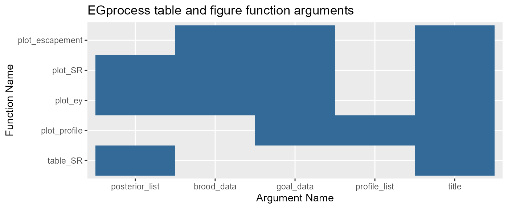
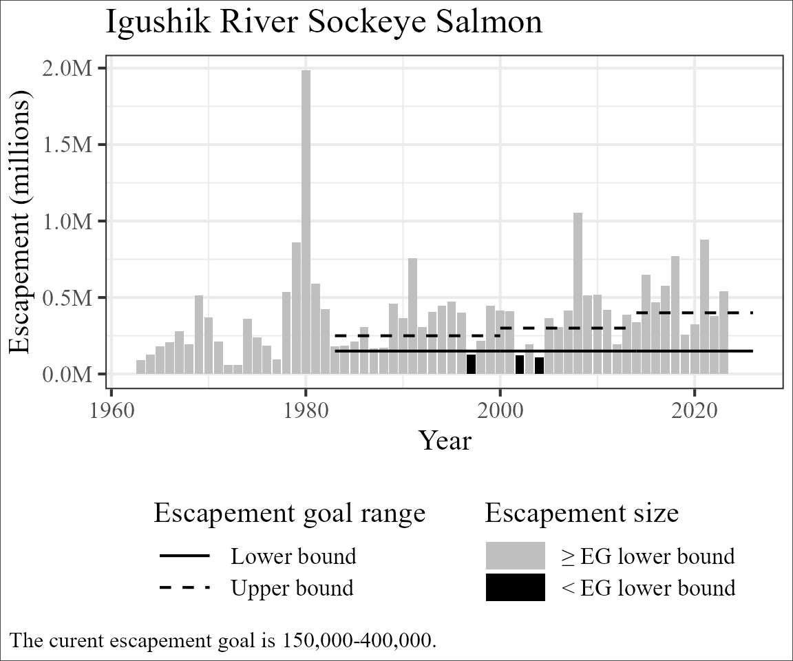

The EGprocess package provides R code to support
ADF&G staff in production of the figures and tables required during
the tri-annual ADF&G escapement goal review process1. Use of this package
will allow staff from both ADF&G fisheries divisions, and all
regions within both divisions, to present standardized figures and
tables during the escapement goal review process internally, to
stakeholders and to BOF members. By utilizing standardized presentations
of similar information reviewers can minimize the time spent orienting
themselves to how the information is presented and maximize time spend
understanding the information presented. This vignette is the first in a
series describing use of the EGprocess package. Familiar
users may want to refer to vignettes about standard usage or special cases.
Every salmon escapement goal in the State of Alaska is reviewed
triennially synchronous with the BOF meeting cycle for each geographic
area or region. The escapement goal review process is marked by 3 steps
which are helpful to define before describing the use of the
EGprocess package. The process begins with a
review of all escapement goals in the area where
ADF&G staff identify escapement goals where any factors associated
with the stock, the fishery, or the stock assessment have changed since
the last time the escapement goal was modified. Some or all of the
identified goals are then updated by compiling the
stock assessment information accumulated since the last update and
reanalyzing that complete dataset. After an analysis is updated the
department makes a finding based on the updated
analysis. Escapement goal findings can communicate a wide range of
changes:
EGprocess is intended to standardize the presentation of
updated analyses. Typically, updated analyses are followed by one of the
first 3 findings listed above.
In Alaska, most salmon stocks have existing escapement goals and
those escapement goals bounds are the result of extensive negotiations
that account for not only the information about how to maximize
sustained yield provided by the analysis but also concerns about stock
status or data quality that are poorly reflected in the analysis and/or
concerns from management staff about how to most effectively persecute
the fishery. Because all of these factors are incorporated in the
current escapement goal, it is most helpful to consider how the updated
escapement goal analysis changes our interpretation of the existing goal
rather than using the updated analysis to develop an new escapement goal
finding naively. For these reasons EGprocess includes
features allowing for comparison between analyses and goals.
In addition to a common language about the escapement goal process it’s helpful to have a common language about the analyses and goal being considered during the process. The current escapement goal is the BEG, SEG or lower bound SEG currently in use for management of the fishery. The current goal was adopted based on a department finding supported by an earlier analysis, which we refer to as the original analysis, since our reference point is relative the updated analysis just conducted. Recall that an updated analysis does not imply a change to the escapement current goal, but when it does the new goal range will be refered to as a new escapement goal finding.
EGprocess includes example data from the the escapement
goal review process for Igushik River Sockeye salmon prior to the 2026
BOF meeting. Prior to this meeting, ADF&G staff decided to update
the Igushik River Sockeye salmon analysis using the ADF&G Shiny
application for escapement goal analysis 2. Data objects in
EGprocess are designed to work seamlessly with inputs and
outputs to the Pacific Salmon SR Escapement Goal Analysis Shiny
Application but can also be easily produced in R if the spawner-recruit
analysis is done outside of the shiny application.
data_Igushik is the “Run” data ADF&G staff provided
to the Shiny app to conduct the escapement goal analysis. It contains
historical escapements, total run sizes and run sizes by age. When the
Igushik River Sockeye salmon analysis was updated prior to the 2026 BOF
meeting the input data contained escapement (S), run
(harvest + escapement, N) and run by age
(A3-A8) estimates from the 1996 - 2023
seasons.
#Showing only the first and last 5 rows to save space.
head(data_Igushik)
#> yr S N A3 A4 A5 A6 A7 A8
#> 1 1963 92184 136351 0 75779 51359 9213 0 0
#> 2 1964 128532 191054 0 41912 135654 13488 0 0
#> 3 1965 180840 297253 0 28452 252608 16194 0 0
#> 4 1966 206360 310078 0 17671 262777 29630 0 0
#> 5 1967 281772 412374 105 196850 205905 9514 0 0
#> 6 1968 194508 290686 299 125081 159764 5541 0 0
tail(data_Igushik)
#> yr S N A3 A4 A5 A6 A7 A8
#> 56 2018 770772 1920088 0 734904 1181555 3629 0 0
#> 57 2019 256074 1358927 851 233250 1120532 4294 0 0
#> 58 2020 323814 1212549 2073 555165 655310 2 0 0
#> 59 2021 878952 2023218 0 1014244 943585 65390 0 0
#> 60 2022 378768 2986219 668 664431 2310253 10867 0 0
#> 61 2023 542496 1379859 0 303697 1046811 29350 0 0post_data_Igushik_byr13_05 and
post_data_Igushik_byr13_15 contain random draws from the
posterior distributions of lnalpha, beta,
phi and sigma and can be retrieve from the
shiny app using the Download MCMC or Download Jags
button3.
Colloquially, one can think of the rows in post_data...
representing possible values of lnalpha, beta,
phi and sigma (and in combination possible
mean and median spawner-recruit or expected yield relationships) that
are supported by the empirical data used in the analysis. Two examples
of posterior data are available in EGprocess.
The file post_Igushik_byr63_15 represents posterior draws
from the analysis update that occurred prior to the 2026 Bristol Bay BOF
meeting (i.e. the updated analysis). The last time the Igushik River
Sockeye salmon goal was changed was in 2015. Spawning escapements and
the subsequent recruitment from the 1963 - 2005 brood years were
available to inform that change. EGprocess also contains
the file post_Igushik_byr63_05 which approximates the
analysis which would have been available to inform the 2015 finding (i.e
the original analysis)4.
EGprocess expects posterior data to be provided as a
named list where the name follows the convention ‘Brood years:
xxxx-yyyy’. This is important because without this information posterior
distributions are indistinguishable. EGprocess capitalizes
on this naming convention by utilizing the name to label empirical data
and statistical outputs by brood year in tables and plots.
str(post_Igushik_byr63_05)
#> List of 1
#> $ Brood years: 1963-2005:'data.frame': 6000 obs. of 6 variables:
#> ..$ beta : num [1:6000] 0.181 0.152 0.137 0.14 0.136 ...
#> ..$ deviance: num [1:6000] 1231 1232 1231 1229 1230 ...
#> ..$ e0 : num [1:6000] -0.0448 0.00158 0.01644 0.08514 -0.36778 ...
#> ..$ lnalpha : num [1:6000] 1.53 1.7 1.18 1.44 1.46 ...
#> ..$ phi : num [1:6000] 0.465 0.503 0.37 0.453 0.645 ...
#> ..$ sigma : num [1:6000] 0.757 0.654 0.734 0.66 0.732 ...
str(post_Igushik_byr63_15)
#> List of 1
#> $ Brood years: 1963-2015:'data.frame': 6000 obs. of 6 variables:
#> ..$ beta : num [1:6000] 0.1115 0.115 0.159 0.1508 0.0891 ...
#> ..$ deviance: num [1:6000] 1588 1585 1585 1586 1594 ...
#> ..$ e0 : num [1:6000] 1.7467 0.0559 0.6947 0.4059 1.7842 ...
#> ..$ lnalpha : num [1:6000] 1.15 1.42 1.41 1.58 1.53 ...
#> ..$ phi : num [1:6000] 0.462 0.577 0.49 0.602 0.721 ...
#> ..$ sigma : num [1:6000] 0.711 0.642 0.603 0.694 0.662 ...Most plotting functions in EGprocess produce comparisons
between the the updated and original analysis if 2 posterior
distributions are provided. To make this comparison
EGprocess expects both sets of posterior data to be
provided in chronological order within a list.
post_Igushik_list <- c(post_Igushik_byr63_05, post_Igushik_byr63_15)
str(post_Igushik_list)
#> List of 2
#> $ Brood years: 1963-2005:'data.frame': 6000 obs. of 6 variables:
#> ..$ beta : num [1:6000] 0.181 0.152 0.137 0.14 0.136 ...
#> ..$ deviance: num [1:6000] 1231 1232 1231 1229 1230 ...
#> ..$ e0 : num [1:6000] -0.0448 0.00158 0.01644 0.08514 -0.36778 ...
#> ..$ lnalpha : num [1:6000] 1.53 1.7 1.18 1.44 1.46 ...
#> ..$ phi : num [1:6000] 0.465 0.503 0.37 0.453 0.645 ...
#> ..$ sigma : num [1:6000] 0.757 0.654 0.734 0.66 0.732 ...
#> $ Brood years: 1963-2015:'data.frame': 6000 obs. of 6 variables:
#> ..$ beta : num [1:6000] 0.1115 0.115 0.159 0.1508 0.0891 ...
#> ..$ deviance: num [1:6000] 1588 1585 1585 1586 1594 ...
#> ..$ e0 : num [1:6000] 1.7467 0.0559 0.6947 0.4059 1.7842 ...
#> ..$ lnalpha : num [1:6000] 1.15 1.42 1.41 1.58 1.53 ...
#> ..$ phi : num [1:6000] 0.462 0.577 0.49 0.602 0.721 ...
#> ..$ sigma : num [1:6000] 0.711 0.642 0.603 0.694 0.662 ...The data file goal_Igushik contains the history of
escapement goals for the Igushik River sockeye salmon and contains a new
row for each year the escapement goal changed. For Igushik River sockeye
salmon the goal was created in 1984 and ranged from 150,000 to 250,000
fish. In 2001, the analysis was updated resulting in a new escapement
goal finding of 150,000 to 300,000 fish. In 2015, the analysis was
updated again resulting in a new escapement goal finding of 150,000 to
400,000 fish.
goal_Igushik
#> yr lb ub
#> 1 1984 150000 250000
#> 2 2001 150000 300000
#> 3 2015 150000 400000Functions within the EGprocess package use prefixes to
identify their intent:
get_: Modify or create input datasets for downstream
use
get_age: Modify Shiny app “Run” data age composition to
account for censoring or combining extreme ages that occurred during the
escapement goal analysisget_brood: Create a brood table from Shiny app “Run”
dataget_profile: Create the dataset required to plot an
Optimal Yield Profileplot_: Create figures
plot_escapement: Historical escapement plotplot_SR: Spawner-recruit relationship plotplot_ey: Expected yield plotplot_profile: Optimal yield profile plottable_: Create tables
table_SR: Spawner-recruit parameters tableoutput_: Wrapper which combines plot_ and
table_ functions typically called together.
-output_SR: Outputs the historical escapement plot,
spawner-recruit relationship plot, expected yield plot, Optimal yield
profile plot, and spawner-recruit parameter table as a single list.R functions use the syntax
function(argument1, argument2, argument3, exc.). In all
EGprocess functions the first several arguments reference
the data being plotted and can be identified by the suffix
_list or _data where the suffix indicates the
data type expected5. Plot and table functions have been
coordinated to rely on similar arguments to the extent possible.

EGprocess contains helper functions6 to create a brood
table from “Run” type data input into the ADF&G shiny app. Two
functions are included. The function get_age accepts “Run”
data as an input and outputs “Run” data in the same format after
modifying the age composition by censoring or combining extreme ages.
This function is not needed if age composition information was not
combined or censored during the escapement goal analysis, as was the
case for Igushik River Sockeye salmon.
The function get_brood creates the brood table. Notice
that the results is ‘jagged’ and includes escapements (S),
recruits (R) and return-by-age (b.Age#) which
were not observed. For example, the Igushik River Sockeye salmon
analysis update conducted prior to the 2026 BOF meeting utilized
escapement information through 2023 but only had recruitment through
2015 because 8 year old fish from the 2015 escapement were not observed
until 2023.
# make brood table
brood_Igushik <- get_brood(run_data = data_Igushik)
# Showing only the first and last 12 rows to save space.
head(brood_Igushik, n = 12)
#> yr S b.Age3 b.Age4 b.Age5 b.Age6 b.Age7 b.Age8 R
#> 1 1955 NA NA NA NA NA NA 0 NA
#> 2 1956 NA NA NA NA NA 0 0 NA
#> 3 1957 NA NA NA NA 9213 0 0 NA
#> 4 1958 NA NA NA 51359 13488 0 0 NA
#> 5 1959 NA NA 75779 135654 16194 0 0 NA
#> 6 1960 NA 0 41912 252608 29630 0 0 324150
#> 7 1961 NA 0 28452 262777 9514 0 0 300743
#> 8 1962 NA 0 17671 205905 5541 0 0 229117
#> 9 1963 92184 0 196850 159764 11591 0 0 368205
#> 10 1964 128532 105 125081 428996 28877 0 0 583059
#> 11 1965 180840 299 319406 438372 52842 0 0 810919
#> 12 1966 206360 0 54401 238028 8604 61 0 301094
tail(brood_Igushik, n = 12)
#> yr S b.Age3 b.Age4 b.Age5 b.Age6 b.Age7 b.Age8 R
#> 58 2012 193326 389 365542 316518 3629 0 0 686078
#> 59 2013 387036 0 906913 1181555 4294 0 0 2092762
#> 60 2014 340590 1766 734904 1120532 2 0 0 1857204
#> 61 2015 651172 0 233250 655310 65390 0 0 953950
#> 62 2016 469230 851 555165 943585 10867 0 NA NA
#> 63 2017 578700 2073 1014244 2310253 29350 NA NA NA
#> 64 2018 770772 0 664431 1046811 NA NA NA NA
#> 65 2019 256074 668 303697 NA NA NA NA NA
#> 66 2020 323814 0 NA NA NA NA NA NA
#> 67 2021 878952 NA NA NA NA NA NA NA
#> 68 2022 378768 NA NA NA NA NA NA NA
#> 69 2023 542496 NA NA NA NA NA NA NAplot_profile requires the profile_list
argument which is a derivative of the posterior data files
described above. A helper function is provided to create
profile_list from posterior_data. The function
get_priofle can accept either 1 or 2 item lists as input
and will provide an output list of the same size.
profile_Igushik_list <- get_profile(post_Igushik_list, multiplier = 1e-5)Most of the functions included in EGprocess are
applicable to escapement goal updates associated with spawner-recruit
analyses. One exception is the function plot_escapement
which shows historical escapements overlain with current and historical
escapement goal ranges and is a suggested figure when any escapement
goal is updated during the escapement goal review process. We will use
plot_escapement herein to demonstrate the use of a
EGprocess plotting function.
To create the output the user needs to present the function with 2 datasets: one including the calendar years and escapements to be plotted7 and a second including a chronological list of each year the escapement goal changed and the appropriate lower and upper bounds established at each change.
plot_escapement(brood_data = brood_Igushik,
goal_data = goal_Igushik,
title = "Igushik River Sockeye Salmon")
As described in “link to ADF&G report”.↩︎
Prior to May 2026 the posterior distribution was retrieved using Download MCMC and the user would receive a single csv containing only the posterior distribution. After May 2026 the Download JAGS button will provide a .rds file (a R data file) which contains the input data file, the brood table, the jags data file, and the jags output file (which includes the posterior distribution of the analysis).↩︎
Ideally, the exact posterior would be available. That
does not seem to be the case here but one benefit of standardizing the
escapement goal review process is the we can identify these needs and
aspire to archive them in the future. post_Igushik_byr63_05
in included so the ideal escapement goal review process can be presented
while demonstrating the use of EGprocess.↩︎
Named lists are expected for arguments with the _list suffix and dataframes are expected for arguments with the _data suffix.↩︎
get_age and get_brood are
included for analyses ran prior to May 2026. After May 2026 the brood
table can be retrieved directly from the rds file output buy the
Download Jags button.↩︎
A brood table will satisfy this requirement but so with
any data.frame with columns yr and S.↩︎